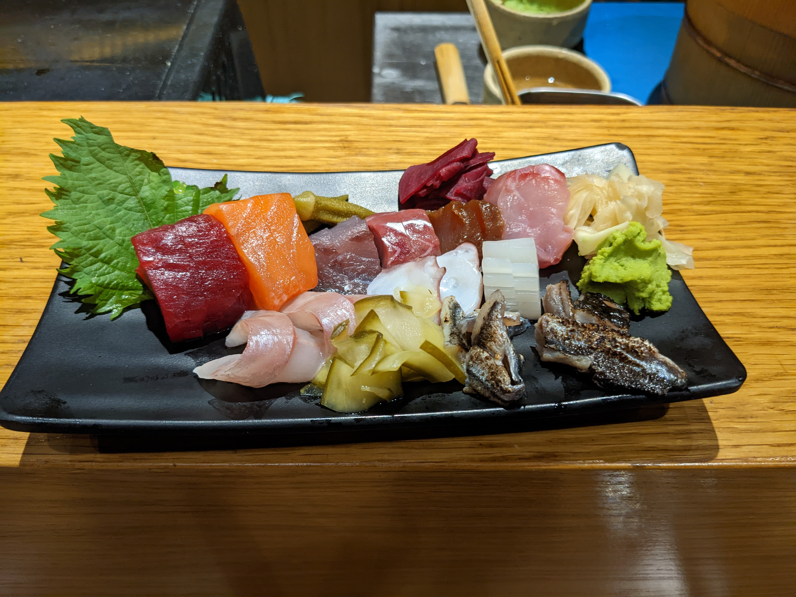

Sushimou
Sushimou is a small sushi restaurant near Syntagma Square. The chef mastered his craft in Japan and returned to Greece to serve sushi. There is only the omakase menu which is fine because it is very cheap for what you are getting. This is definitely the best sushi you will find anywhere in Greece!
📍Ta Kanaria
(Τα Κανάρια)

At Kanaria they have two things (and a limited amount of appetizers). Prawns and Fish. Both are the best you can find in Athens by a significant margin. The prawns, however, are the best you will have in your entire life. The can hardly even be considered the same food as prawns you have somewhere else. Book a flight just to eat here!
Warning: The restaurant is closed all summer.
Warning: This restaurant is very expensive compared to other restaurants in Athens.